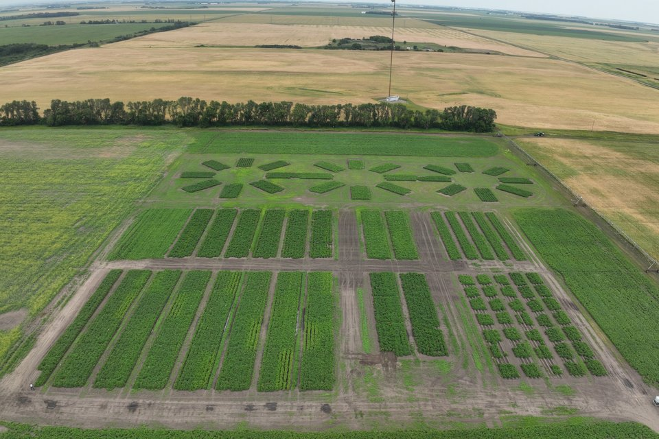

Curriculum vitae
Academic CV
Education, research appointments, publications, teaching, and professional service.
View PDFDigital agronomy · University of Manitoba
PhD in Soil Science · Winnipeg, Manitoba
I lead agricultural field research and use drones, satellite imagery, and machine learning to measure crop nitrogen, predict yield, and map agricultural soils.

About
I’m a soil scientist based in Winnipeg. My work brings together field trials, remote sensing, and machine learning to study crop nutrition, yield, and agricultural soils.
For my PhD, I led potato field campaigns near Carberry, Manitoba, working with the Manitoba Crop Diversification Centre. My doctoral research was supported by Mitacs and the Keystone Potato Producers Association of Manitoba.
I wrote a successful Mitacs Accelerate proposal with Planet Labs to evaluate whether Tanager hyperspectral satellite imagery can help map agricultural soils in Manitoba.
At the University of Manitoba, I supported teaching in digital agriculture and soil science and trained researchers and technicians in drone operations and field sensing.
Documents
Browse my academic CV, illustrated research portfolio, and selected credentials from industry and academic organizations.
Curriculum vitae
Education, research appointments, publications, teaching, and professional service.
View PDFProject portfolio
An illustrated overview of crop sensing, spectroscopy, soil mapping, and field research.
View PDFGoogle · 2026
Project planning, execution, and Agile methods.
View PDFUniversity of Colorado System · 2026
Research team management, mentoring, and resource planning.
View PDFLab2Market Discover Agri-Food
Exploring applications and potential users for research in agriculture and food.
View PDFRPAS Centre
Training in remotely piloted aircraft operations.
View PDFGEO University
Specialized training in hyperspectral image analysis.
View PDFIEEE Geoscience and Remote Sensing Society · 2026
Conference certificate for research on using multiple sensors to estimate crop nitrogen and yield.
View PDFAdditional credentials include the Transport Canada RPAS Pilot Certificate for Basic Operations and training in geospatial foundation models from the STFC Hartree Centre. See the academic CV.
Research case studies
I study when sensing can extend the value of ground measurements and what it takes to validate those predictions for agricultural use.
Field trials · UAV multispectral & LiDAR
I coordinated randomized field trials in irrigated Russet Burbank potatoes and brought together drone imagery, canopy height, petiole nitrate, and measured harvest yield. We used 172 plots from the 2024 and 2025 seasons for the joint modelling study.
Joint modelling improved yield estimates on held-out plots. Nitrogen gains depended on model architecture, and single-date imagery left substantial variation in tuber yield unexplained.
Held-out test set · R²

Field-to-lab spectroscopy
We tested petiole nitrate prediction from canopy, fresh-leaf, and dried-tissue spectra. Aligning field spectra to a fresh-leaf reference improved the field model.
1D convolutional neural network · R²

Satellite image fusion
I contributed to a study testing whether fusing PlanetScope SuperDove and refined Sentinel-2 imagery could improve soil organic carbon estimates. The best model combined fused imagery and terrain attributes using Gaussian process regression.
Fieldwork & research leadership
Working with field teams, research partners, and producers in Manitoba.
Coordinated plot trials, flights, crop sampling, logistics, and quality checks across three potato seasons near Carberry. Used QGIS, ArcGIS, Python, and R for spatial analysis and modelling.
Wrote the successful 24-month Mitacs Accelerate proposal with Planet Labs to evaluate Tanager hyperspectral imagery against field and laboratory measurements of Prairie agricultural soils.
Trained students, technicians, and researchers in UAV mission planning and field protocols, mentored a visiting researcher for six months, and shared results through producer demonstrations and conferences.



The Manitoba Crop Diversification Centre managed the trial plots. Mitacs and the Keystone Potato Producers Association of Manitoba supported the doctoral research.
Publications
Journal articles and a data paper on crop sensing, machine learning, and soil science.
Chatraei Azizabadi & Badreldin · Data in Brief
Chatraei Azizabadi & Badreldin · Computers and Electronics in Agriculture
Chatraei Azizabadi et al. · Smart Agricultural Technology
Kafle, Chatraei Azizabadi et al. · Smart Agricultural Technology
Chatraei Azizabadi et al. · Remote Sensing
Co-authored · Catena
Chatraei Azizabadi & Badreldin · Potato Research · Published online 2024
Co-authored · Environmental Geochemistry and Health
No papers match. Try a different search or year.
Peer reviewer for GIScience & Remote Sensing and Critical Insights in Agriculture.